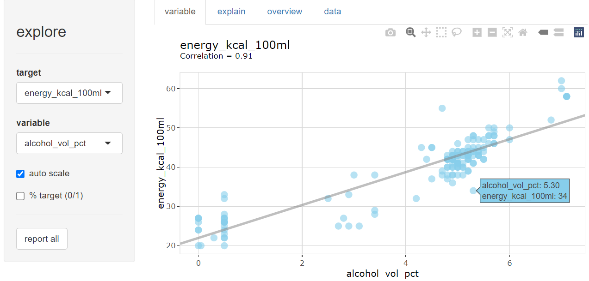

Simplifies Exploratory Data Analysis.
Overview
There are three ways to use the package:
-
Interactive data exploration using
explore() - Generate an automated report of your data (or patterns in your data) using
report() -
Manual exploration using a easy to remember set of functions:
explore(),describe(),explain_*(),abtest().
You can use {explore} with tidy data (each row is an observation) or with count data (each row is a group of observations with same attributes, one variable stores the number of observations, typically n)
# install from CRAN
install.packages("explore")
# install DEV version (github)
devtools::install_github("rolkra/explore")Examples
library(explore)
beer <- use_data_beer()
beer |> explore()
beer |> describe()# A tibble: 11 × 8
variable type na na_pct unique min mean max
<chr> <chr> <int> <dbl> <int> <dbl> <dbl> <dbl>
1 name chr 0 0 161 NA NA NA
2 brand chr 0 0 29 NA NA NA
3 country chr 0 0 3 NA NA NA
4 year dbl 0 0 1 2023 2023 2023
5 type chr 0 0 3 NA NA NA
6 color_dark dbl 0 0 2 0 0.09 1
7 alcohol_vol_pct dbl 2 1.2 35 0 4.32 8.4
8 original_wort dbl 5 3.1 54 5.1 11.3 18.3
9 energy_kcal_100ml dbl 11 6.8 34 20 39.9 62
10 carb_g_100ml dbl 16 9.9 44 1.5 3.53 6.7
11 sugar_g_100ml dbl 16 9.9 26 0 0.72 4.6